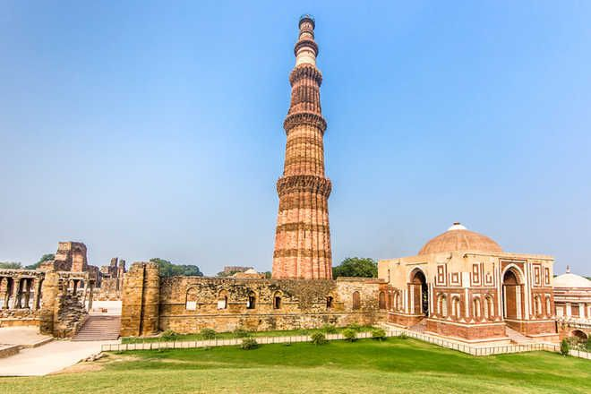
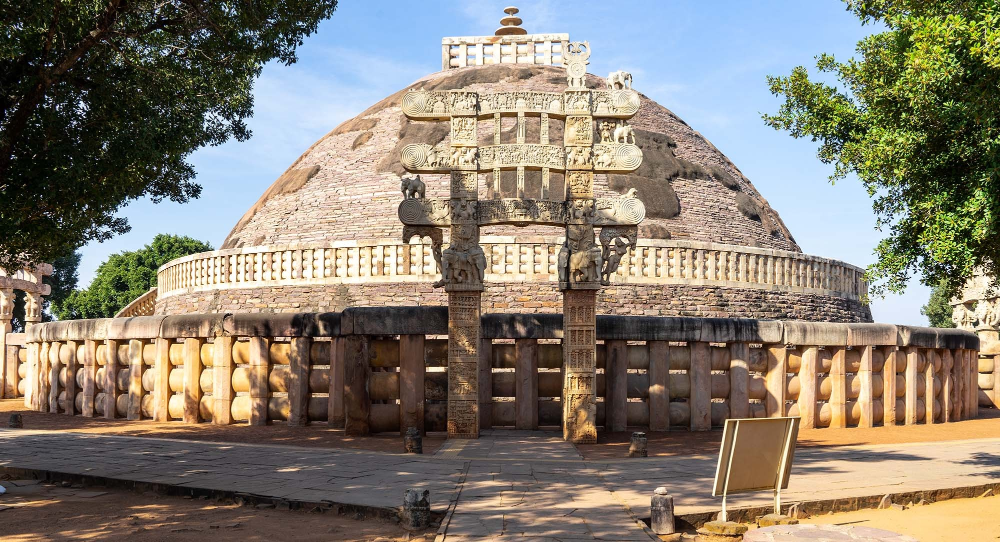
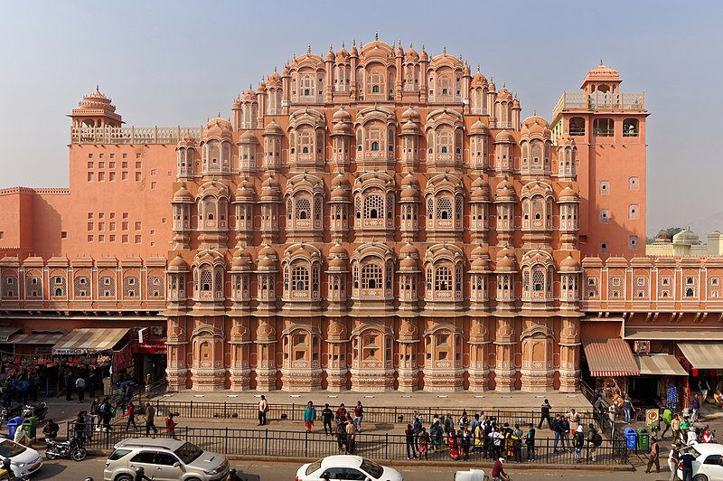

Taj Mahal

The Taj Mahal is one of the seven wonders of the world and is considered to be the most popular tourist attraction in the country. A symbol of love, the Taj was built by Mughal Emperor Shah Jahan for his queen Mumtaz. Tagore described the Taj as a "teardrop on the cheek of eternity". The monument attracts a lot of tourists all around the year.
Qutub Minar

At a height of 234 feet, this minaret is the tallest individual tower
in the world and is a perfect display of Mughal architectural
brilliance. The soaring and brave tower that allures tourists despite
being destroyed by ravages of natural apocalypses several times, Qutub
Minar is the tallest individual tower in the world and second tallest
monument of Delhi. A UNESCO World Heritage Site, it is located in
Mehrauli and its construction was started in 1192 by Qutb
Ud-Din-Aibak, founder of Delhi Sultanate. Later, the tower was built
by various rulers over the centuries. The sight of this glorious
monument takes you back to the rich history of India.
Best Time to Visit: Throughout the year
Sanchi Stupa
The Great Stupa at Sanchi is one of the oldest stone structures in India, and an important monument of Indian Architecture. It was originally commissioned by the Mauryan emperor Ashoka the Great in the 3rd century BCE. Its nucleus was a simple hemispherical brick structure built over the relics of the Buddha.
Victoria Memorial
The Victoria Memorial is a large marble building, which is considered to be the pride of Kolkata. Built between 1906 and 1921, it is dedicated to the memory of Queen Victoria. Now, it is a museum and a popular tourist spot under the Ministry of Culture.
Hawa Mahal
The Hawa Mahal is a palace in the city of Jaipur, India. Built from red and pink sandstone, it is on the edge of the City Palace, Jaipur, and extends to the Zenana, or women's chambers. The structure was built in 1799 by the Maharaja Sawai Pratap Singh, grandson of Maharaja Sawai Jai Singh, the founder of the city of Jaipur, India. He was so inspired by the unique structure of Khetri Mahal that he built this grand and historical palace.
Hampi

Hampi is an ancient village in the south Indian state of Karnataka. It's dotted with numerous ruined temple complexes from the Vijayanagara Empire. On the south bank of the River Tungabhadra is the 7th-century Hindu Virupaksha Temple, near the revived Hampi Bazaar. A carved stone chariot stands in front of the huge Vittala Temple site. Southeast of Hampi, Daroji Bear Sanctuary is home to the Indian sloth bear.